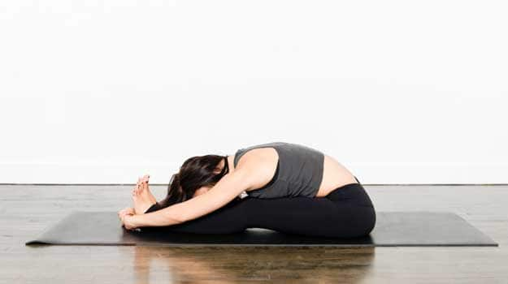

yogga poses

This asana helps in improving the flexibility of the hamstrings and hips and lengthens the spine. Sit up with your back straight and toes pointing outwards. Breathe in and raise your hands over your head and stretch. Now, while breathing out bring your hands down and bend then forward to touch your legs. Place your hands wherever they reach, hold your toes if you can but don’t force yourself. Breathe in and elongate your spine. While breathing out, keep your navel close to your knees.
paschin pose
click for FAQ's